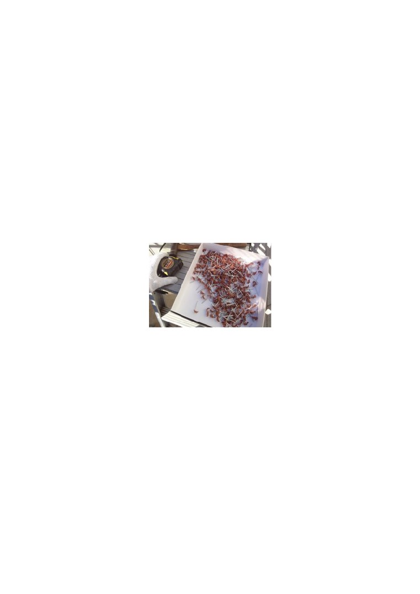

クギを打ち込む深さは、「浅すぎず深すぎずに、波板を固定できる強さである」ことが重要です。
波板の固定は、打ち直しができません。波板に一度穴を開けてしまうと、そこから水が漏れてしまう
からです。クギを打つ位置を決めたら、波板には１つ以上の穴を開けないようにしましょう。波板に
開ける１つの穴に対して、１本のクギを打ちましょう。
□真っ直ぐに打つべし。
波板用のクギは、真っすぐ打つことが大切です。
クギを斜めに打つと、クギの頭の部分から雨漏りが起こることがあります。クギを下地に向かって垂
直に打つことで、波板を固定をさせ、雨漏りを防ぐことができます。
□クギを入れる箱。
箱の中にクギを入れることで、作業が格段にしやすくなります。
箱は「底面の幅があり、浅いタイプ」を用意します。箱の底面に幅があると安定性が出るため、屋根
の上で作業をしやすいからです。
また、底の浅い箱は、クギを取り出すときに便利です。
□傘の向き。
波板用のクギには、傘がついています。
傘には、「波板を押さえ、クギを入れた穴から雨漏りを防ぐ」という特徴があります。クギを打つ時は、
傘の位置を確認することが大切です。傘が横になっていると、波板を押さえることができません。
また、クギを垂直に打つことで、傘の隙間からの雨漏りを防ぎます。
□凸部の頂点からクギを打つ。
波板を固定するとき、凸部の頂点からクギを打ち込むことで波板をしっかりと固定します。
クギをしっかりと固定できなければ、強風などで波板がバタバタと浮いてしまいます。クギは下地の
中央に向かって真っすぐ打つことが大切です。
□山
１枚目の波板を取り付けたら、その上に２枚目の波板を重ねます。波板を重ねる幅は、「２山（ふた
やま）」です。山とは、波板の凸部分のことを指します。
山を重ねることで、波板の端部からの雨漏りを防止することができます（下図）。